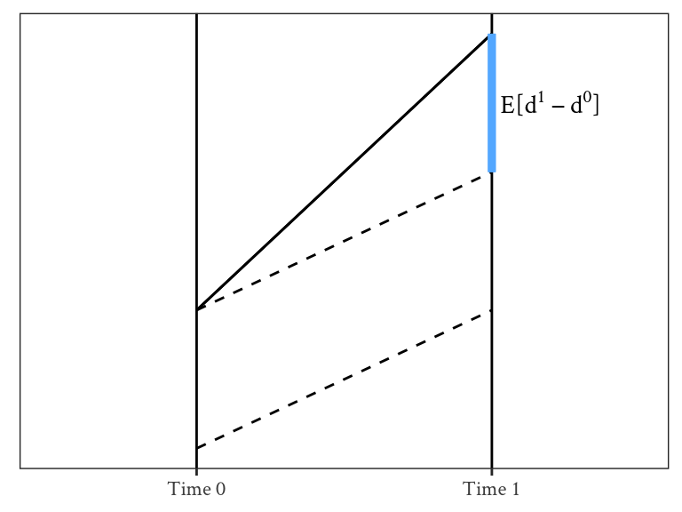
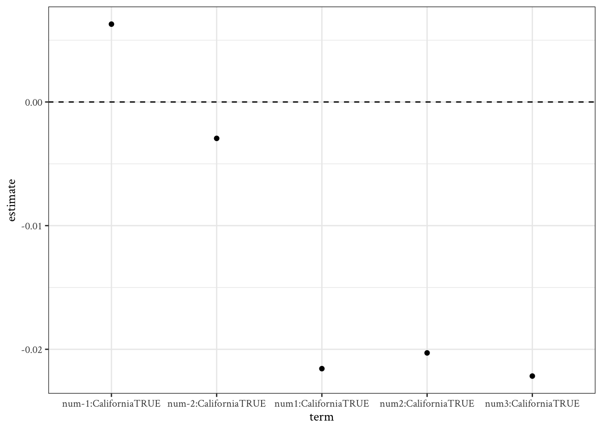

Setup
library(tidyverse)
theme_set(
theme_bw(base_family = "Crimson Text")
)library(tidyverse)
theme_set(
theme_bw(base_family = "Crimson Text")
)This notebook deals with methods that use time to solve causal inference problems.
Fixed effects
Differences in differences
Regression discontinuity
Bring the stuff from the longitudinal notebooks.
| Observed | Unobserved | |
| Time-constant | Experiments, Matching, Regression, FE | Experiments, FE |
| Time-varying | Experiments, Matching, Regression, FE | Experiments, Experiments |
Identification using variation within groups or individuals
Repeated observations within groups or individuals can provide a means for adjusting for unobserved confounders. This is conceptually similar to twin studies in which we look for variation within pairs of twins. We can extend this to larger groups or repeated observations.
The simplest regression model that handles this simply adds varying-intercepts \(\alpha_i\) or “fixed effects.”
\[ y_{ij} = \beta_0 + \theta x_{ij} + \alpha_i + \varepsilon_{ij} \]
With more than two observations per group, we can fit this model using differences.
\[ y_{ij} - \overline y_i = \theta (x_{ij} - \overline x_i) + \varepsilon_{ij} - \overline \varepsilon_{i} \]
The causal predictor needs to vary within groups.
This study design can create comparisons across different levels of the treatment variable only if it varies within group. In examples where the treatment is dichotomous, it is possible for a substantial portion of the sample to exhibit no variation at all in the causal variable within groups. For instance, suppose a varying-intercepts model is used to estimate the effect of maternal employment on child cognitive outcomes by including indicators for each family (set of siblings) in a regression of outcomes on an indicator for whether the mother worked in the first year of the child’s life. In some families, the mother may not have varied her employment status across children. Therefore, no inferences about the effect of maternal employment status can be made for these families. We can only estimate effects for the type of family where the mother varied her employment choice across the children (for example, working after her first child was born but staying home from work after the second).
Gelman, Hill, and Vehtari (2020, 441)
Within-person variation (or “fixed effects”)
Panel data provides the most common use of varying intercepts to estimate causal effects. Here we use repeated observations within the same individuals to adjust for time-constant unobserved confounders. Here, issues of balance and overlap still exist, but they only apply for within-person comparisons.
If the purpose of matching/weighting is to get rid of all observable confounders, then the purpose of fixed-effects is to additionally get rid of all time-constant unobserved confounders.
Weight Loss Example
Let’s say I weigh an individual in January (time 1) and again in July (time 2). This individual was not dieting before January, but does diet between January and July. In July, we find that the individual weighs 10kg less.
We want to know how much the diet caused the individual’s weight to change. That is, I’d like to compare the actual weight loss ( \(\text{weight}_\text{July}^1 - \text{weight}_\text{Jan}^1\) ) to a counterfactual weight loss in a world where where there is no diet ( \(\text{weight}_\text{July}^0 - \text{weight}_\text{Jan}^0\) ).
We can represent weight at two different time points using the following equations:
\[ \begin{align} \text{weight}_1 &= \theta \ \text{diet}_1 + \mu + \epsilon_1, \\ \text{weight}_2 &= \theta \ \text{diet}_2 + \mu + \epsilon_2 \end{align} \]
Here, \(\theta\) is the treatment effect of the diet; \(\mu\) represents everything about the individual that does not change (i.e., time-constant) and that affects their weight (i.e., a personal fixed effect); \(\epsilon_1\) and \(\epsilon_2\) represent other time-varying effects on weight.
Finally, because we already assumed that the individual was not dieting at time 1, we know that \(\text{diet}_1 = 0\). Subtracting both equations, we get the following:
\[ \text{weight}_2 - \text{weight}_1 = \theta + \underbrace{(\mu - \mu)}_{0} + (\epsilon_2 - \epsilon_1) \]
The power of fixed-effects estimation allows us to get rid of \((\mu - \mu)\) by simple subtraction; by comparing individuals to themselves (within-person variance), we have gotten rid of everything about them that does not change (i.e., time-constant), even if we do not know what that is.
In other words, this simple pre-post comparison allows for a good estimate of \(\theta\) if we are also willing to believe that \(E[\epsilon_2 - \epsilon_1] = 0\). Maybe the individual would have lost weight anyway even without dieting because January is during the holidays when it is easier to gain weight (i.e., \(\epsilon_1 > \epsilon_2)\).
To deal with this, we might want to compare people who diet between January and July with those who do not diet over the same period to capture the effect of the passage of time. This is called difference-in-differences estimation.
Identification using within and between group variation.
Almost all identification strategies rely on comparisons across groups that have and have not been exposed to a treatment. Difference-in-differences strategies additionally make use of another source of variation—i.e., time—to help adjust for potential unobserved differences across groups.
The goal is to be able to compare the within variation in the treated group to the within variation in the untreated group.
Assumptions
The change in \(y\) for the control group needs to represent what would have happened to the treatment group in the absence of the treatment.
Potential change, given that \(P=1\) means post-exposure and \(P=0\) means pre-exposure.
\[ \begin{align} d^0 &= y^0_{P=1} - y^0_{P=0}, \\\\ d^1 &= y^1_{P=1} - y^1_{P=0} \end{align} \]
Average Treatment Effects:
\[ \begin{align} \text{ATE} &= \text{E}[d^1 - d^0], \\\\ \text{ATT} &= \text{E}[d^1 - d^0 \mid T = 1], \\\\ \text{ATU} &= \text{E}[d^1 - d^0 \mid T = 0] \end{align} \]
Ignorability assumption:
\[ d^0, d^1 \perp T \]
This design is often presented as if it provides a weaker set of assumptions than traditional observational studies, as it a quasi-experiment, not just a study where we have to hope we’ve measured all confounders. However, looking carefully at the assumptions, it is unclear if the assumption of randomly assigned changes in potential outcome is truly more plausible than the assumption of randomly assigned potential outcomes for those with the same value of the pre-treatment variable (and of course both approaches could allow for conditioning on additional covariates). In either case, we need not assume actual random manipulation of treatment assignment for either assumption to hold, only results that would be consistent with such manipulation.
Gelman, Hill, and Vehtari (2020, 444–45)
The parallel trends assumption is inherently unobservable. It says that the difference between the treated and untreated groups would have remained the same in the post-treatment period as it was in the pre-treatment period, as depicted in Figure 7.1. This assumption fails, among other reasons, when there are other treatments affecting the untreated groups that are absent in the treated groups.
tibble(
t = c("Time 0", "Time 1"),
y1 = 1:2,
y0 = 0:1,
y = c(1, 3)
) |>
pivot_longer(!c(t, y), names_to = "g") |>
ggplot(aes(t, value, group = g)) +
geom_line(linetype = "dashed") +
geom_vline(xintercept = c("Time 0", "Time 1")) +
geom_line(aes(t, y)) +
geom_segment(x = "Time 1", y = 2, yend = 3, xend = "Time 1", linewidth = 1.5,
color = "steelblue1") +
labs(y = NULL, x = NULL) +
theme(axis.text.y = element_blank(), axis.ticks.y = element_blank(),
panel.grid = element_blank()) +
annotate("text", x = 2.2, y = 2.5, label = latex2exp::TeX(r"($E[d^1 - d^0]$)"), family = "Crimson Text")
Note. If parallel trends hold for \(Y\), then it does not hold for \(\log(Y)\) or any other non-linear transformation.
Regression Framework
Suppose that time is represented with a simple before-and-after exposure variable \(P\). We can see the difference-in-differences strategies within the traditional regression framework in terms of a simple interaction.
\[ y_i = \beta_0 + \beta_1 x_i + \beta_2 P_i + \underbrace{\theta \ x_i P_i}_\text{diff-n-diff} + \varepsilon_i \tag{7.1}\]
The difference-in-differences estimand is simply the coefficient on the interaction term.
Intuitively this makes sense because the interaction term represents the difference in the slope coefficients on time across the treatment groups where the slope coefficients on time each represent a difference in means (across time points). Equivalently, we could say that the interaction term represents the difference in slope coefficients on treatment across the time periods.
Gelman, Hill, and Vehtari (2020, 443)
| \(X = 0\) | \(X = 1\) | |
|---|---|---|
| \(P = 0\) | 80 | 80 |
| \(P=1\) | 75 | 70 |
We can combine the values in Table 7.1 with Equation 7.1 to get the following values:
\[ \beta_0 = 80, \ \beta_1 = 0, \ \beta_2 = -5, \theta = -5 \]
Two-way fixed effects
Alternatively, we can think of this in terms of two-way fixed effects.
\[ y_i = \alpha_{g[i]} + \alpha_{t[i]} + \underbrace{\beta \ T_i}_\text{diff-n-diff} + \varepsilon_i \tag{7.2}\]
The \(\theta\) coefficient in Equation 7.1 and Equation 7.2 is equivalent, provided we only have two groups and two time periods.
Unfortunately, the TWFE approach for calculating difference-in-differences effects does not work particularly well for “rollout designs” (or “staggered treatment timing”) in which the treatment is applied at different times to different groups.
Example:
data("organ_donations", package = "causaldata")
library(fixest)
library(lme4)
library(plm)
d <- organ_donations |>
janitor::clean_names() |>
mutate(treated = state == "California" & quarter %in% c('Q32011','Q42011','Q12012')) |>
mutate(state = factor(state), quarter = factor(quarter))
clfe <- feols(rate ~ treated | state + quarter, data = d)
ols <- lm(rate ~ treated + state + quarter, data = d)
twfe <- plm(
rate ~ treated,
index = c("quarter", "state"),
model = "within",
effect = "twoways",
data = d
)
modelsummary::modelsummary(
list(feols = clfe, lm = ols, plm = twfe),
coef_omit = c(-1),
gof_map = "nobs"
)| feols | lm | plm | |
|---|---|---|---|
| treatedTRUE | −0.022 | −0.022 | −0.022 |
| (0.006) | (0.020) | (0.020) | |
| Num.Obs. | 162 | 162 | 162 |
Note the difference in standard errors.
Test of prior trends:
Use the data from before the treatment period.
Do a NHST on the \(\theta\) coefficient in the following regression:
\[ y_i = \alpha_{g[i]} + \beta \ t_i + \theta \ t_i \times g_i + \varepsilon_i \]
Dynamic Treatment Effects
Instead of just focusing on “before” and “after” effects, we can add a separate effect for each time period. A common way of doing in this is to generated a centered time variable—i.e., you subtract the treatment period from the original time variable. Then we just interact the treatment variable with a set of indicator variables for each of the time periods.
For example, suppose we have 3 time periods and that the treatment occurs in \(t = 0\).
\[ y_i = \alpha_{g[i]} + \alpha_{t[i]} + \theta_{-1[i]} \times T_i + \theta_{1[i]} \times T_i + \varepsilon_i \]
Here, we should not find discernible effects among the before-treatment coefficients. Our confidence intervals should also blow up in size because we have less data. Figure 7.2 presents the results for this kind of setup.
library(tidyverse); library(fixest)
od <- causaldata::organ_donations
# Treatment variable
od <- od %>% mutate(California = State == 'California')
# Interact quarter with being in the treated group using
# the fixest i() function, which also lets us specify
# a reference period (using the numeric version of Quarter)
clfe <- feols(Rate ~ i(Quarter_Num, California, ref = 3) |
State + Quarter_Num, data = od)
# And use coefplot() for a graph of effects
coefplot(clfe)
## something fucked up is going on here
unique(od$Quarter_Num - 3L)[1] -2 -1 0 1 2 3od <- od |>
mutate(num = factor(Quarter_Num - 3L)) |>
mutate(num = fct_relevel(num, "0"))
lm(Rate ~ factor(State) + num + num*California, data = od) |>
broom::tidy(conf.int = TRUE) |>
slice(34:38) |>
ggplot(aes(term, estimate)) +
geom_point() +
geom_hline(yintercept = 0, linetype = "dashed")
Add example from Theory and Credibility
Note. If you combine difference-in-differences with matching, the answer will be exactly the same as long as you match on time-constant observable.
diff-n-diff
nsw <- haven::read_dta("data/nsw.dta")
nsw_long <- nsw |>
panelr::long_panel(
id = "id",
wave = "t",
periods = c(75, 78),
label_location = "end"
) |>
mutate(post = if_else(t == 78, 1L, 0L))
glimpse(nsw_long)Rows: 1,444
Columns: 12
Groups: id [722]
$ id <fct> 1, 1, 2, 2, 3, 3, 4, 4, 5, 5, 6, 6, 7, 7, 8, 8, 9, 9, 10, 10…
$ t <dbl> 75, 78, 75, 78, 75, 78, 75, 78, 75, 78, 75, 78, 75, 78, 75, …
$ data_id <chr> "Lalonde Sample", "Lalonde Sample", "Lalonde Sample", "Lalon…
$ treat <dbl> 1, 1, 1, 1, 1, 1, 1, 1, 1, 1, 1, 1, 1, 1, 1, 1, 1, 1, 1, 1, …
$ age <dbl> 37, 37, 22, 22, 30, 30, 27, 27, 33, 33, 22, 22, 23, 23, 32, …
$ education <dbl> 11, 11, 9, 9, 12, 12, 11, 11, 8, 8, 9, 9, 12, 12, 11, 11, 16…
$ black <dbl> 1, 1, 0, 0, 1, 1, 1, 1, 1, 1, 1, 1, 1, 1, 1, 1, 1, 1, 0, 0, …
$ hispanic <dbl> 0, 0, 1, 1, 0, 0, 0, 0, 0, 0, 0, 0, 0, 0, 0, 0, 0, 0, 0, 0, …
$ married <dbl> 1, 1, 0, 0, 0, 0, 0, 0, 0, 0, 0, 0, 0, 0, 0, 0, 0, 0, 1, 1, …
$ nodegree <dbl> 1, 1, 1, 1, 0, 0, 1, 1, 1, 1, 1, 1, 0, 0, 1, 1, 0, 0, 0, 0, …
$ re <dbl> 0.0000, 9930.0459, 0.0000, 3595.8940, 0.0000, 24909.4492, 0.…
$ post <int> 0, 1, 0, 1, 0, 1, 0, 1, 0, 1, 0, 1, 0, 1, 0, 1, 0, 1, 0, 1, …ggplot(nsw_long, aes(x = post, y = re, group = factor(treat))) +
geom_smooth(method = "lm") +
scale_x_continuous(limits = c(0, 1), breaks = c(0,1), labels = c("1975", "1978")) +
theme(legend.position = "top") +
labs(x = "year",
y = "income ($)",
title = "Difference in differences for NSW")`geom_smooth()` using formula = 'y ~ x'didreg <- lmer(
re ~ treat * post + (1 | id),
data = nsw_long,
REML = FALSE
)
didregLinear mixed model fit by maximum likelihood ['lmerMod']
Formula: re ~ treat * post + (1 | id)
Data: nsw_long
AIC BIC logLik deviance df.resid
29058.10 29089.75 -14523.05 29046.10 1438
Random effects:
Groups Name Std.Dev.
id (Intercept) 2212
Residual 5230
Number of obs: 1444, groups: id, 722
Fixed Effects:
(Intercept) treat post treat:post
3026.68 39.42 2063.37 846.89 ols <- lm(re ~ treat*post, data = nsw_long)
m2 <- feols(re ~ treat*post | id, data = nsw_long)The variable 'treat' has been removed because of collinearity (see $collin.var).modelsummary::modelsummary(
list(lmer = didreg, lm = ols, feols = m2),
gof_map = c("nobs", "icc")
)| lmer | lm | feols | |
|---|---|---|---|
| (Intercept) | 3026.683 | 3026.683 | |
| (275.435) | (275.817) | ||
| treat | 39.415 | 39.415 | |
| (429.447) | (430.043) | ||
| post | 2063.366 | 2063.366 | 2063.366 |
| (358.761) | (390.065) | (324.753) | |
| treat × post | 846.888 | 846.888 | 846.888 |
| (559.365) | (608.173) | (581.796) | |
| SD (Intercept id) | 2211.709 | ||
| SD (Observations) | 5229.795 | ||
| Num.Obs. | 1444 | 1444 | 1444 |
| ICC | 0.2 |
Slide 82 add more adjustment variables and see that the estimates remain the same
Note. Using within-person variation is a powerful strategy, but it does not allow for making generalizations about “the overall effect” of something—i.e., it’s the effect conditional on the fact that there is within person variation. We can’t generalize automatically to groups of people that don’t have within person variance.
Between and within variation.
Two typical situations:
clusters (e.g., students nested in classrooms).
repeated observations (i.e., observations nested in subjects)
fixed effects is like your mom saying “you should not compare yourself to other people”
fixed effects driven estimates might not generalize to people who don’t change
intra-class correlation \(\to\) variance partitioning coefficient
when there is no within-person variation (what year were you born?), vpc = 100%
averages predicting averages is not the same as fluctuations predicting fluctuations
Extending the mixed model (slide 131)
Within-between hybrid model
\[ y_{it} = \gamma_0 + \gamma_1 z_i + \beta_W (x_{it} - \bar x_i) + \beta_B \bar x_i + \theta_t + \alpha_i + \epsilon_{it} \]
by construction, \(\alpha_i\) and \((x_{it} - \bar x_i)\) are independent
Correlated random effects (contextual) model
\[ y_{it} = \gamma_0 + \gamma_1 z_i + \beta_W x_{it} + \beta_C \bar x_i + \theta_t + \alpha_i + \epsilon_{it} \]
Note \(\beta_C = \beta_B - \beta_W\)
Both fit the data equally well, but the interpretation of the coefficients is slightly different.
\(\beta_W\) is literally the same thing you get when using “fixed effects”
Schunck and Perales Within and between cluster effects in generalized linear mixed models